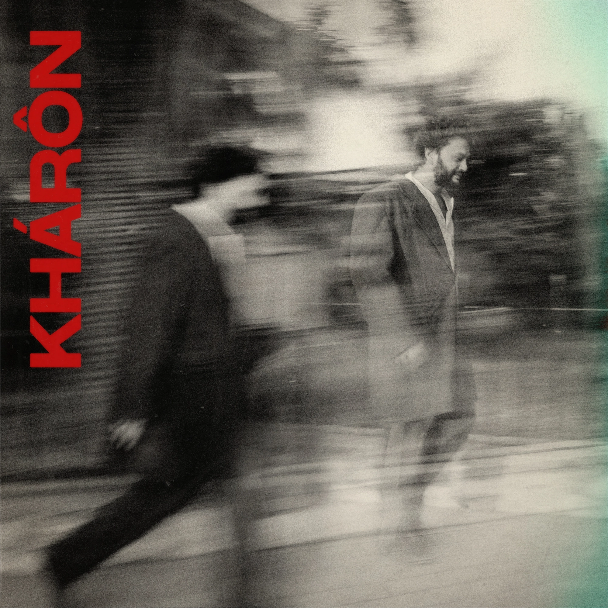

Agustin Boasso presenta “Khärón”, su segunda canción de este 2021. El músico cordobés nos presenta en esta ocasión una pieza de su repertorio mas humano y sincero hasta el momento.
Dentro del mundo de Agustin Boasso, por fuera de las plataformas digitales, nos encontramos con sus “Inefables de la Ocasión”, la banda en vivo que acompaña estas canciones entre las que también encontramos a Lucas Garzon (Luqui) y Facundo Gentile (EQUISMO) entre otros. La presencia de esta liveband modifica por completo la experiencia psycho-mechanical llevándola a un punto de apreciación en donde destaca la psicodelia y el virtuosismo en la ejecución.
En la producción estuvo a cargo de Santiago Llorente y el mastering a cargo de Lautaro Dellavecchia en NTP Estudio .
Este 2021 será un año agitado para Boasso, quien anticipa una salida de una batería de singles y una serie de sesiones audiovisuales para compartir la experiencia completa de su música.